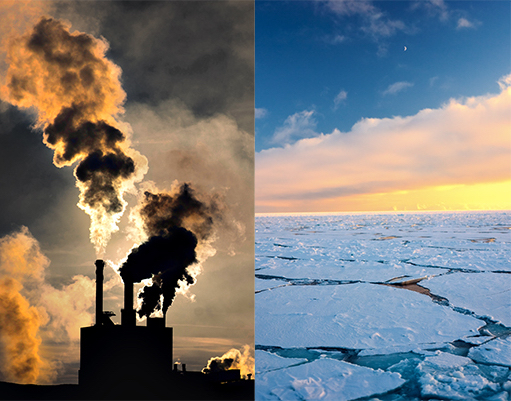
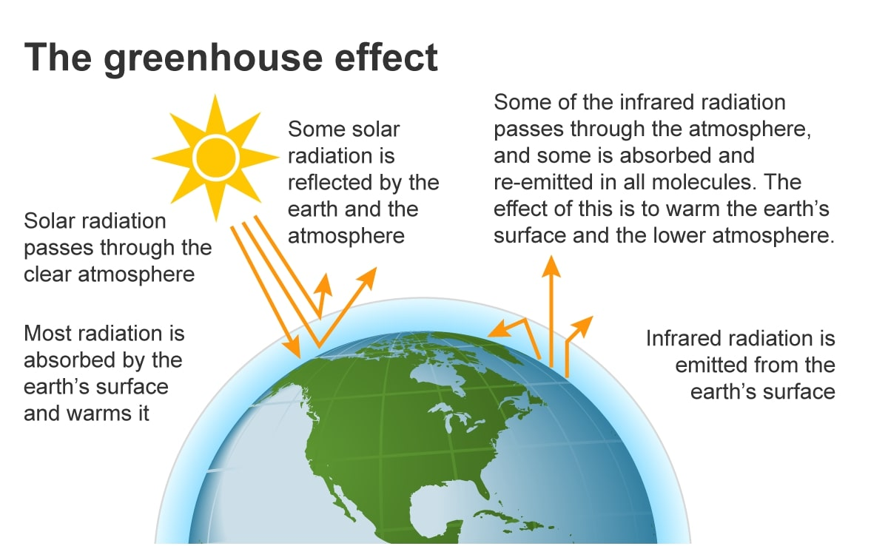
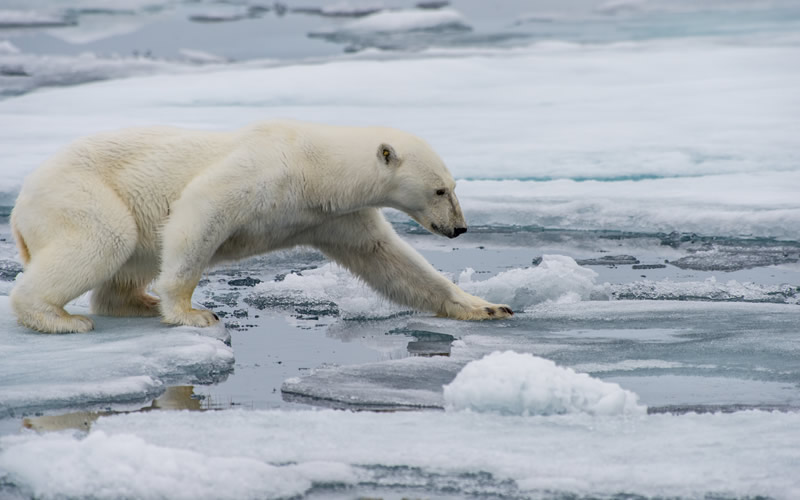

What is Global Warming?
Global warming is the long-term heating of Earth’s climate system observed since the pre-industrial period (between 1850 and 1900) due to human activities, primarily fossil fuel burning, which increases heat-trapping greenhouse gas levels in Earth’s atmosphere.
Since the pre-industrial period, human activities are estimated to have increased Earth’s global average temperature by about 1 degree Celsius, a number that is currently increasing by 0.2 degrees Celsius per decade.
Most of the current warming trend is extremely likely (greater than 95 percent probability) the result of human activity since the 1950s and is proceeding at an unprecedented rate over decades to millennia.
Greenhouse gases
Human activity since the Industrial Revolution, mainly extracting and burning fossil fuels, has increased the amount of greenhouse gases in the atmosphere, resulting in a radiative imbalance.
Global anthropogenic greenhouse gas emissions in 2018, excluding those from land use change, were equivalent to 52 billion tonnes of CO2. Of these emissions, 72% was actual CO2. CO2 emissions primarily come from burning fossil fuels to provide energy for transport, manufacturing, and electricity.
Despite the contribution of deforestation to greenhouse gas emissions, the Earth's land surface, particularly its forests, remain a significant carbon sink for CO2. The land-surface sink is estimated to remove about 29% of annual global CO2 emissions.
Tipping points and long-term impacts
The greater the amount of global warming, the greater the risk of passing through ‘tipping points’, thresholds beyond which certain impacts can no longer be avoided even if temperatures are reduced.
Some large-scale changes could occur over a short time period. The long-term effects of climate change include further ice melt, ocean warming, sea level rise, and ocean acidification.
On the timescale of centuries to millennia, the magnitude of climate change will be determined primarily by anthropogenic CO2 emissions. This is due to CO2's long atmospheric lifetime. Oceanic CO2 uptake is slow enough that ocean acidification will continue for hundreds to thousands of years.
Impact of climate change on the environment
Ecological collapse. Bleaching has damaged the Great Barrier Reef and threatens reefs worldwide.
Extreme weather. Drought and high temperatures worsened the 2020 bushfires in Australia.
Arctic warming. Permafrost thaws undermine infrastructure and release methane, a greenhouse gas.
Habitat destruction. Many arctic animals rely on sea ice, which has been disappearing in a warming Arctic.
_______________________________________________________
Scientific evidence for warming of the climate system is unequivocal.
- Intergovernmental Panel on Climate Change